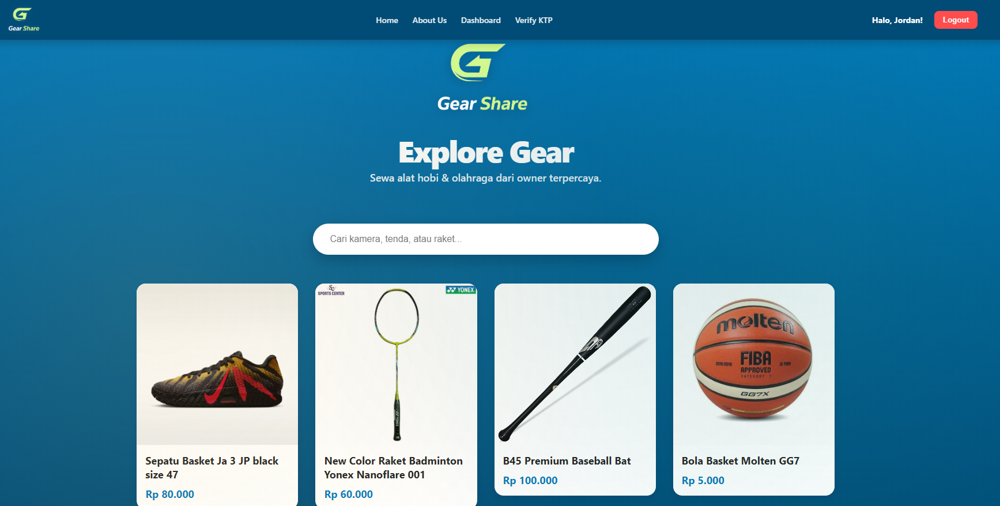

Group project · Backend Developer
GearShare
A web-based application that makes it easier for users to rent and lend equipment. The system brings authentication, booking, payment, and communication between users into one platform.

My Role & Contributions
I contributed as a backend developer in the project team, developing APIs and implementing the features required by the application.
- API development
- Developed backend APIs and business logic to connect application features with the frontend and data layer.
- Authentication
- Contributed to the backend authentication and authorization flow.
- Booking & payment
- Worked on backend functionality for equipment bookings and payment/deposit flows.
Technologies
- Backend
- Node.js, Express.js, REST APIs, and JSON Web Tokens (JWT).
- Data & uploads
- MongoDB and Multer for file uploads.
- Team frontend
- React and Axios for the web interface and API communication.
- Communication
- Socket.IO is included in the documented stack for real-time messaging.
Problem & Approach
Equipment can be expensive to buy for occasional use, while owners may have items sitting unused. GearShare connects owners and renters through searchable listings and a shared rental workflow.
The team used a React frontend, a Node.js and Express backend, and MongoDB storage. APIs connect account access, equipment management, bookings, and payment flows across these layers.
What I Learned
Through this project, I learned about backend development and how APIs connect different features within an application. Working in a team also helped me understand how backend business logic supports the wider user experience.